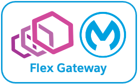
This Codelab provides additional supporting documentation for installing Anypoint Flex Gateway as an ingress controller on a generic Kubernetes cluster (i.e., not cloud-platform specific). This Codelab aims to complement the documentation MuleSoft publishes and not replace it. Furthermore, we authored the content herein based on input, feedback, comment, questions, etc., we received from actual customers.
Flex Gateway is an ultrafast API gateway designed to manage and secure APIs running anywhere. It can secure both Mule and non-Mule APIs, and run anywhere — e.g., your cloud, on-premises, containerized environments, and hybrid
Flex Gateway supports two operating modes:
In this Codelab, we are using the default settings and Flex Gateway will run in connected mode.
In this Codelab, you will need the following:
This Codelab complements the following MuleSoft documentation:
Ensure you review and satisfy the following prerequisites before installing Anypoint Flex Gateway version 1.3 to a generic Kubernetes cluster.
In Anypoint Platform, in Access Management more specifically, ensure your user account has the following permissions for Runtime Manager and the environment where you will install Flex Gateway:
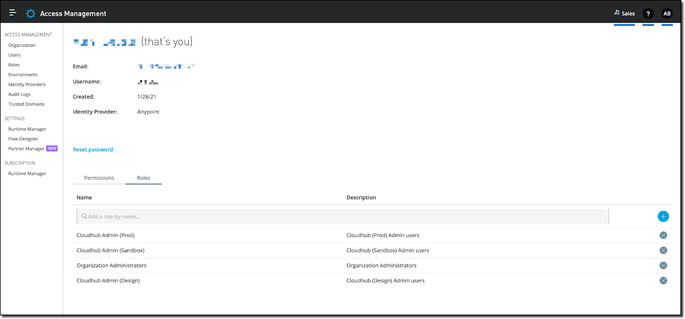
Running Flex Gateway version 1.3 on Kubernetes requires the following:
apiVersion: networking.k8s.io/v1 as the API version in your configuration resources.Flex Gateway requires the following minimum hardware configuration:
Flex Gateway must communicate with the Anypoint Platform control plane. As relevant, ensure you add the following hostnames and ports to the allowlist.
Host | Port | Description | Protocol |
anypoint.mulesoft.com | 443 | Required to connect with the control plane, push internal metrics, and download custom policy binaries | HTTPS |
arm-mcm2-service.kprod.msap.io | 443 | Required to communicate with the transport layer | mTLS |
logging.ingestion.us-east-1.prod.cloudhub.io | 443 | Required to send analytics data to the control plane | HTTPS |
metering.ingestion.us-east-1.prod.cloudhub.io | 443 | Required to send analytics data to the control plane | HTTPS |
monitoring.ingestion.us-east-1.prod.cloudhub.io | 443 | Required to send analytics data to the control plane | HTTPS |
exchange-files.anypoint.mulesoft.com | 443 | Required to download policies | HTTPS |
exchange2-asset-manager-kprod.s3.amazonaws.com | 443 | Required to download policies | HTTPS |
configuration-resolver.prod.cloudhub.io | 443 | Required to download policies | HTTPS |
Host | Port | Description | Protocol |
eu1.anypoint.mulesoft.com | 443 | Required to connect with the control plane, push internal metrics, and download custom policy binaries | HTTPS |
arm-mcm2-service.kprod-eu.msap.io | 443 | Required to communicate with the transport layer | mTLS |
logging.ingestion.eu-central-1.prod-eu.msap.io | 443 | Required to send analytics data to the control plane | HTTPS |
metering.ingestion.eu-central-1.prod-eu.msap.io | 443 | Required to send analytics data to the control plane | HTTPS |
monitoring.ingestion.eu-central-1.prod-eu.msap.io | 443 | Required to send analytics data to the control plane | HTTPS |
configuration-resolver.prod-eu.msap.io | 443 | Required to download policies | HTTPS |
exchange-files.eu1.anypoint.mulesoft.com | 443 | Required to download policies | HTTPS |
exchange2-asset-manager-kprod-eu.s3.eu-central-1.amazonaws.com | 443 | Required to download policies | HTTPS |
When adding Flex Gateway to Kubernetes, the recommended approach is to follow the generic instructions Anypoint Runtime Manager provides. More specifically, the organization id and registration token are prepopulated in step 2 (Register your gateway) and are specific to 1) the business group and 2) the environment selected. For example, we selected the Sales business group and the Prod environment in the following screen capture, and the prepopulated values reflect those selections.
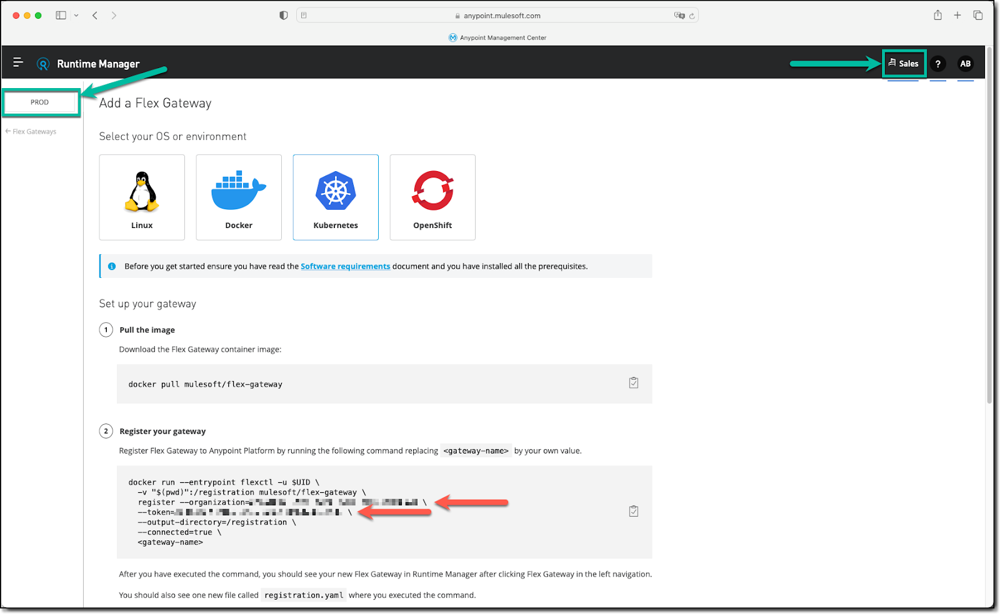
In this Codelab, we review those generic instructions but more importantly, we add additional details to complement them.
Step 1 of the Anypoint Runtime Manager generic instructions consists of downloading the Docker image of Flex Gateway from Docker Hub, which we use to register a new instance of Flex Gateway in the next step. The generic instructions imply completing this step on our computer using Docker Desktop on macOS or Windows, or Docker CE on Linux, as examples.
docker pull mulesoft/flex-gateway
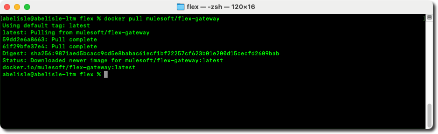
Step 2 of the Anypoint Runtime Manager generic instructions involves running the Docker image to register a Flex Gateway instance with the Anypoint Platform control plane. To do so, we suggest leveraging the command generated in Anypoint Runtime Manager, as it is prepopulated based on the business group and environment selected.
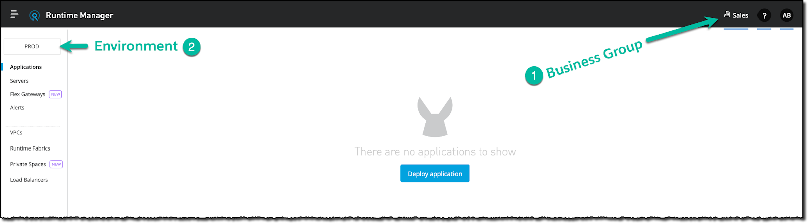
--organization option represents the organization id of the business group selected, and--token option represents the registration token specific to the environment selected.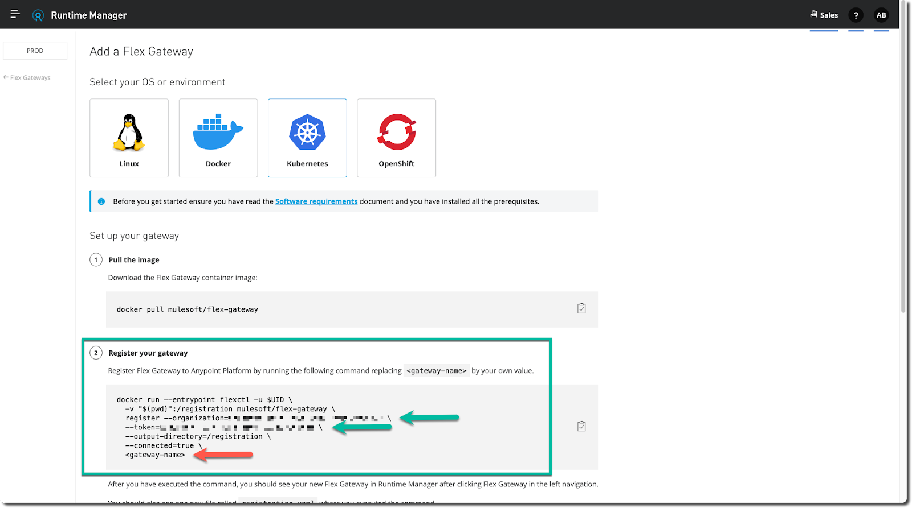
docker run command and paste it into a text editor to alter it before running it. As the changes are minor, you can paste it to the command line window (Windows) or the terminal (Linux or Mac) you opened in the previous step, but do not run the command yet. We pasted the generic command here for convenience.docker run --entrypoint flexctl -u $UID \ -v "$(pwd)":/registration mulesoft/flex-gateway \ register --organization=<organization-id> \ --token=<registration-token> \ --output-directory=/registration \ --connected=true \ <gateway-name>
docker run command and replace the placeholder with the name of your Flex Gateway instance.--rm flag before the --entrypoint flag (i.e., docker run --rm --entrypoint ...) to dispose of the container automatically once the registration completes, as it is no longer required.docker run command to the command line window (Windows) or the terminal (Linux or Mac) and execute it.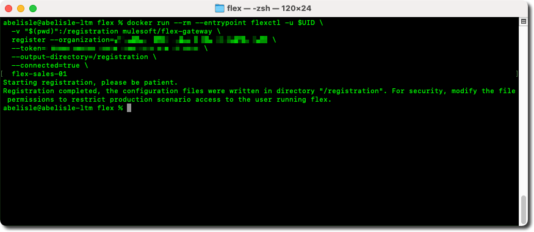
registration.yaml.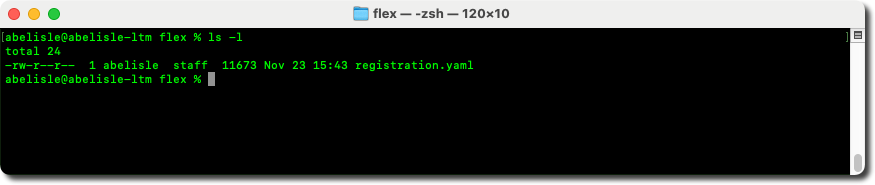
Step 3 of the Anypoint Runtime Manager generic instructions involves connecting to the Kubernetes cluster to add the Helm chart repository for Flex Gateway.
helm repo add flex-gateway https://flex-packages.anypoint.mulesoft.com/helm
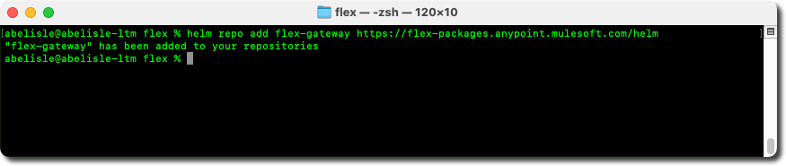
helm repo update
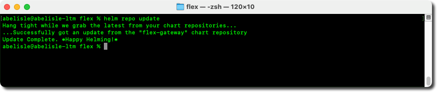
Step 4 of the Anypoint Runtime Manager generic instructions consists of deploying a Flex Gateway instance to the Kubernetes cluster using Helm and the registration file from step 2.
helm upgrade <release-name> flex-gateway/flex-gateway \ --install \ --namespace <namespace-name> --create-namespace \ --set-file registration.content=<registration-file-name> \ --wait
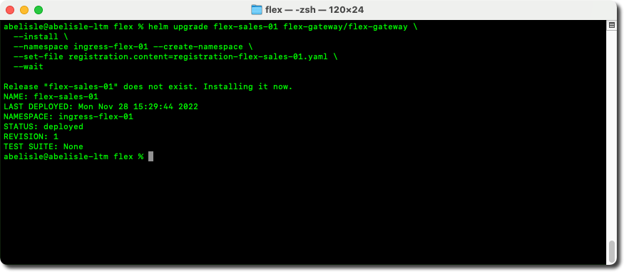
Finally, step 5 of the Anypoint Runtime Manager generic instructions consists of verifying that the Flex Gateway instance connected successfully to the Anypoint Platform control plane.
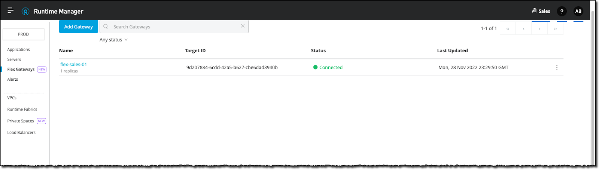
In this Codelab, you install Anypoint Flex Gateway as an ingress controller on a generic Kubernetes cluster (i.e., not cloud-platform specific). This Codelab uses the default settings, which means that your Flex Gateway instance runs in connected mode.